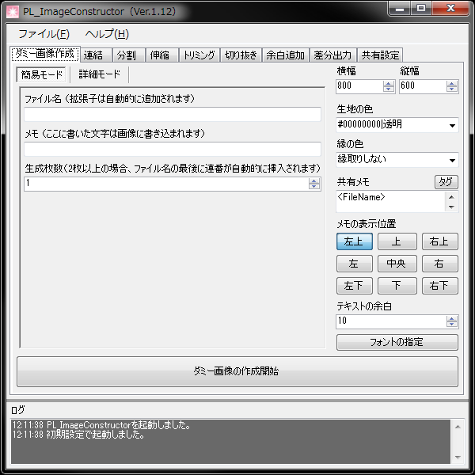

PL_ImageConstructor
[ Ver.1.21 (2021/08/20) ]

PL_ImageConstructorは、ダミーファイルを一括作成したり、複数のファイルを一括でトリミングしたり、連結したりできる支援ツールです。
ゲーム制作の支援として特化していますが、それ以外の用途にも使用可能です。
| Windows XP/7 日本語版
|
| .NET Framework3.5 |
- アプリケーションを利用した事によるいかなる損害に対して、作者は一切の責任を負いません。
- アプリケーションの修正、及びバージョンアップの義務を作者は負いません。
- 動作環境の項は、アプリケーションが快適に動作することを保障する物ではありません。
堅苦しくて申し訳ありませんが、上記を同意の上アプリケーションをご利用下さい。
PL_ImageConstructorのフォルダを削除してください。
レジストリの操作はしていません。
- Ver.1.21 (2021/8/20)
- 一括伸縮：バイリニアおよびバイキュービック拡大時、画像外の四方が透明としてフィルタ処理される問題を修正。
- Ver.1.20 (2018/1/18)
- 一括伸縮：ニアレストネイバー補間法が正常に機能していない問題を修正。
- Ver.1.19 (2017/5/1)
- .Net Framework 3.5に変更。
- タブコントロールにフォーカスがあるときマウスホイールによるタブ切り替えを追加。
- 共有設定：「処理が終了した時、ファイルリストを削除」を追加。
- 一括連結：「同階層の画像のみ連結」を追加。
- 一部ツールで「処理が終了した時、保存されたフォルダを開く」が機能しない問題を修正。
- 一括合成を追加。
- Ver.1.18 (2016/6/6)
- 余白追加：矩形指定モード時、基準位置が機能しない問題を修正。
- Ver.1.17 (2016/5/27)
- 一括伸縮：「大きいほうに合わせる」「小さいほうに合わせる」を追加。
- 一括伸縮：「拡大を禁止」「縮小を禁止」を追加。
- Ver.1.16 (2016/4/21)
- Ver.1.15 (2015/11/13)
- 出力フォーマットにpng（1bitモノクロ）を追加。
- 出力フォーマットにpng（8bitグレースケール）を追加。
- Ver.1.14 (2015/07/30)
- Ver.1.13 (2015/07/09)
- 一括変換を追加。
- 伸縮以外の「ディレクトリ構造を維持する」を修正。
- 一部コンボボックスのキーボード入力を禁止化。
- 一括分割：命名規制が保存されていなかった問題を修正。
- Ver.1.12 (2014/07/25)
- 一括伸縮を追加。
- 一括切り抜きを追加。
- 一括余白追加を追加。
- 「処理が終了した時、保存されたフォルダを開く」の仕様変更。
- 入出力対応フォーマットにjpegを追加。（出力時の品質レベル指定可能）
- Ver.1.11 (2014/01/30)
- 一括分割：「命名規則」のオプションを追加。
- バージョン管理方式変更。
- Ver.1.10 (2013/11/06)
- 一括連結：「枚数チェックを行わない」のオプションを追加。
- 一部チェックボックス情報が正しく保存されない問題を修正。
- Ver.1.09 (2012/11/13)
- 一部アクセスキーが使用できなかった問題を修正。
- テキストモードの変換速度を向上。
- Ver.1.08 (2012/07/27)
- アイコンを差し替え。
- テキストボックス外でCtrl+Aを押すと強制終了する問題を修正。
- 特定条件でファイルがリストボックスに登録されない問題を修正。
- Ver.1.07 (2012/02/15)
- 差分出力：ファイル系タグから拡張子削除、Extensionタグを追加。
- ダミー作成：特定条件で強制終了される問題を修正。
- Ver.1.06 (2011/09/20)
- 保存場所の階層がない場合、ディレクトリを自動作成するように変更。
- 差分出力を追加。
- Ver.1.05 (2011/08/24)
- 一括分割を追加。
- 一括連結：合計連結数を65以上にしようとすると落ちる問題を修正。
- Ver.1.04 (2011/06/08)
- 一括連結：サイズの基準項目を追加。
- 一括連結：各種不具合を修正。
- Ver.1.03 (2011/04/05)
- ウィンドウサイズの変更に対応。
- テキストボックスにCtrl+Aのショートカットを実装。
- Ver.1.02 (2011/03/31)
- 一括連結リストの選択状態が分かりにくい問題を修正。
- Ver.1.01 (2011/01/14)
- ログの縦幅を変更できるように変更。
- 処理完了後、最前面に来るように変更。
- テキストボックスの区切り文字を編集できるように変更。
- Ver.1.00 (2010/12/29)